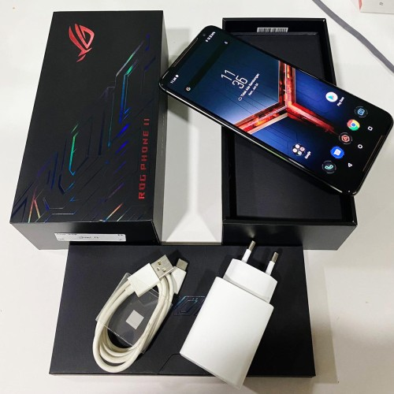

Asus ROG Phone 2
Asus dengan resmi merilis ponsel gaming Asus ROG Phone II di Indonesia pada Kamis (5/12/2019) kemarin. Smartphone ini menjadi ponsel gaming pertama dari Asus yang masuk pasar Indonesia.
Layaknya ROG Phone generasi pertama, Asus juga membuat ponsel ini dengan desain kokoh, lengkap dengan logo khas ROG pada bagian punggung ponsel. Layar seluas 6,59 inci milik ROG Phone II ini dilengkapi dengan proteksi Gorilla Glass 6. Layar tersebut juga memiliki angka refresh rate 120 Hz.
Pada sektor dapur pacu, ROG Phone II dibekali chipset Snapdragon 855 dengan GPU Adreno 640 yang mampu digunakan untuk bermain game dengan konfigurasi tinggi.
Ponsel ini memiliki dua pilihan dari segi RAM serta memori internal yang masing-masing terdiri dari RAM 8 GB penyimpanan 128 GB dan RAM 12 GB penyimpanan 512 GB. Pada bagian belakang terdapat kamera ganda di bagian punggung ponsel,
yang masing-masing beresolusi 48 megapiksel (f/1,8) dan lensa wide-angle 13 megapiksel (f/2,4). Di bagian depan, terdapat sebuah kamera selfie 24 megapiksel (f/2,2) untuk berswafoto.
Baterai sebesar 6.000 mAh ditanamkan untuk mendukung kegiatan gaming yang intens. Bicara soal harga, ROG Phone II dapat dibandrol dengan harga Rp 8,5 juta untuk versi 8GB/128GB dan Rp 12,5 untuk versi 12GB/512GB.